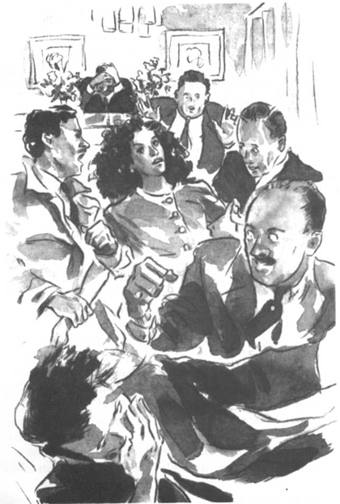

Listen to Part 1:
Rồi thêm một chiếc xe nữa đến bên ngoài văn phòng quản lý hành chính. Trên xe có cha của Rita, Shana và Bungo.
Shana nói: ‘Cha, cha đúng là một kẻ ngốc. Cha sẽ không thể ngăn cản đám cưới này được. Tom có thể làm vậy, nhưng anh ấy quá kiêu ngạo và đần độn.’
Cha của Rita rất buồn bực. Ông ta nói: ‘Rita phải cưới Bungo.’ Ông quay sang hỏi: ‘Anh là người đàn ông sẽ đem lại cho em ấy một tương lai tốt đẹp, phải không, Bungo?’
Bungo nói: ‘Đúng thế.’ Rồi anh ta mở lời: ‘Tôi cần một người vợ để lo việc nhà, nấu ăn và dọn dẹp cho tôi. Tôi muốn lấy một người phụ nữ có thể cùng tôi làm việc.’
Shana nói: ‘Anh cần phải ăn kiêng rồi.’ Cô chỉ vào anh ta: ‘Anh béo quá. Một mình anh đã lấp đầy hết ghế sau của chiếc xe này rồi.’
Shana ra khỏi xe và đỡ cha mình xuống. Anh Tatchi đang chống một cây gậy. Ông trông yếu và bệnh, nhưng vẫn giúp Bungo xuống từ ghế sau.
Đột nhiên, Shana thấy Tom và người thanh tra bước vào tòa nhà. Cô hét: ‘Tom, đợi em với!’ Và đuổi theo họ.
Rita và anh Spooner đang ở trong văn phòng quản lý hành chính. Họ đang đứng trước người quản lý. Người quản lý đang đọc theo một cuốn sổ.
Người thanh tra nói với Tom: ‘Chúng ta chờ đến khi đám cưới kết thúc.’ ‘Rồi chúng ta sẽ bắt họ.’
Nhưng Tom không nghe thấy gì. Anh ta chỉ nghe những lời của người quản lý.
Listen to Part 2:
Người quản lý hỏi: ‘Có lý do nào mà hai người này không thể kết hôn không?’
Bỗng Tom nhảy bổ lên phía trước. Anh ta hét: ‘Có!’ Anh chỉ vào người đàn ông tên Spooner: ‘Gã này là tội phạm.’
Người quản lý làm rơi quyển sổ vì quá đỗi ngạc nhiên. Ông ta từng hỏi câu hỏi đó trong hàng trăm đám cưới khác nhau. Chưa bao giờ có ai trả lời cả. Ông không biết phải làm gì. Rita quay lại nhìn chằm chằm Tom. Cô bắt đầu khóc. Shana vừa mới đi vào phòng, chạy lại về phía chị mình.
Người quản lý hỏi: ‘Có chuyện gì vậy?’
Đúng lúc đó, cánh cửa mở mạnh. Anh Tatchi và Bungo bước vào phòng.
Anh Tatchi vung cây gậy của mình trong không trung. Ông hét lên: ‘Dừng đám cưới này lại ngay!’ Rita sẽ về nhà với tôi. Ngày mai cô ấy sẽ kết hôn với Bungo, một người bạn của tôi.’
Anh Tatchi đi về phía con gái mình. Rita lùi lại phía sau. Cô khóc: ‘Con xin lỗi, cha.’ Cô tiếp lời: ‘Nhưng con phải bỏ nhà ra đi. Con không muốn cưới Bungo. Con chỉ muốn có một người nào đó yêu con thôi!’
Tom hét: ‘Spooner không yêu cô!’
Người quản lý ôm đầu mình lại. Ông ta nói: ‘Hàng trăm đám cưới đều diễn ra suôn sẻ.’ Ông đặt câu hỏi: ‘Tại sao tất cả các người phải làm thế với tôi chứ?’
Anh Tatchi nắm chặt cánh tay trái của Rita. Cô hét lên. Thanh tra Finch chạy tới và kéo Rita ra khỏi tay cha. Tom cố gắng ngăn Spooner trốn thoát. Spooner đấm vào mũi Tom và đẩy Tom ngã xuống sàn.
Listen to Part 3:
Rồi Spooner và Rita chạy khỏi văn phòng quản lý hành chính.
Bungo chứng kiến toàn bộ sự việc. Anh há hốc mồm, trợn tròn mắt vì ngạc nhiên.

Spooner đấm vào mũi Tom và đẩy Tom ngã xuống sàn.
Anh ta hét: ‘Tôi không muốn lấy cái đứa con gái điên kia!’
Bungo chạy ra khỏi phòng.
Khi Tom đứng dậy, có thêm hai cảnh sát nữa tới.
Tom hỏi: ‘Rita và Spooner đã trốn thoát chưa?’
Thanh tra Finch trả lời: ‘Đúng, bọn chúng đã trốn rồi.’ Người thanh tra tiếp lời: ‘Tôi có rất nhiều câu hỏi cần trả lời. Tôi e là anh sẽ phải đến đồn cảnh sát cùng tôi.’